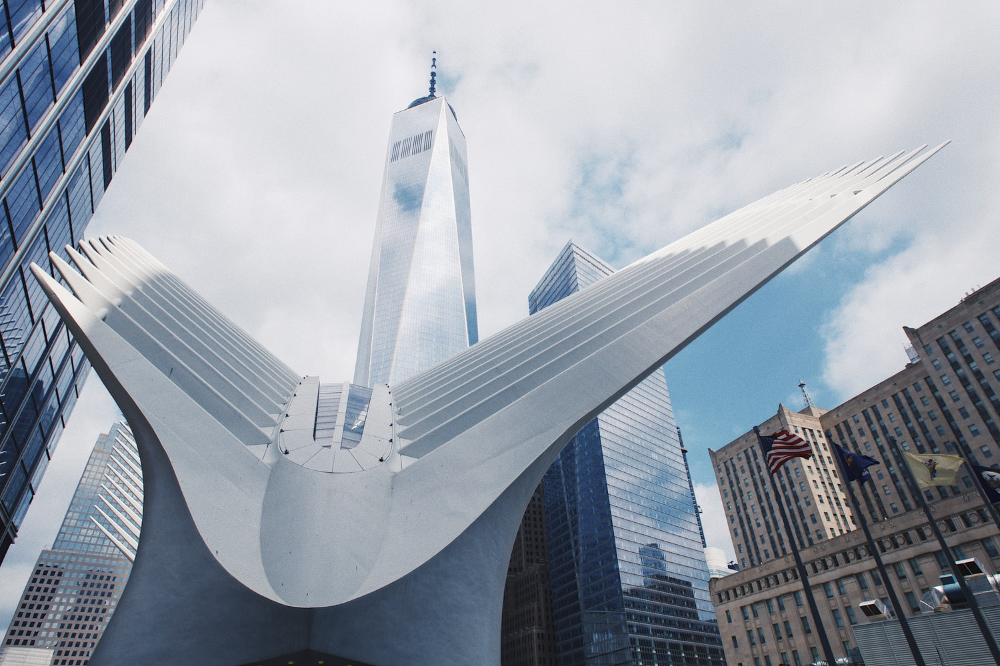

Silver Wings
Piercing the clouds, a spire of twisting glass blends in with the sky. The Freedom Tower looms above the bustling chaos of the city below. Resting beneath, is the current World Trade Center. A myriad of structures dot the landscape, some in memory of the past and others awaiting the future.
As you enter the World Trade Center you’re likely to see a lot of people. Everyone is always trying to get somewhere. Whether it’s a tourist looking around aimlessly outside of the Freedom Tower, or people rushing to work in the subway stations. This is true of most of the city, but the World Trade Center checks all of the boxes. Below on the ground is the Oculus, Fulton Street and the West Side Highway. All of which connect to the massive network of trains and cars spanning the entire city. As a result many New Yorkers often pass through this area, although the majority don’t stick around for long. Up above is the Freedom Tower and numerous other skyscrapers belonging to businesses or residents. These combined with the memorials attract a lot of tourists, who love to wander around taking selfies in front of everything they see. Of course if you're just visiting all you remember is a moment. A snapshot of a specific time, exempt from change. I’m sure you know what happened in this place, but I wasn’t alive back then. The WTC I remember is one that grew and evolved before my eyes.
I remember first seeing the Center before it had all been rebuilt. It was a place filled with sadness for what had happened, but I was too young to know that. I only visited occasionally, whenever I needed to go to New Jersey, and I was always struck by how turbulent the area was. All I saw was a mess of chaos and construction, people swarming around trying to get to their destinations. I’d always cling to my Mom’s arm in fear that I might get lost in the crowd. My parents would always take me around the city, showing me the sights and wonders.
I knew that the city was always changing based on my parents' constant disappointment at that fact. “Hey Anwar, next block is one of my favorite local restaurants! It’s got the best croissants in the city!” They would always say to me, recounting an old romanticized tale of the years they spent enjoying this place. Only for it to all be ruined as soon as they laid eyes on what used to be their old pit stop. “What? Where is it? Why did they replace it with another Starbucks?! We have enough of those!” For me, this didn’t mean much at the time. Sure my parents were sad, but I still had the whole city to explore and this change was only in the past. I wasn’t there to see my parents’ old favorite breakfast spot, so for me it didn’t exist. However, arriving at the edge of the city was different. There I was surrounded by the city in motion, an active demonstration of New York’s evolution.
If you were to go back to when I first arrived at the World Trade Center, I doubt you would recognize it right away. However the one thing you would still see is the people. Even in the aftermath of tragedy and surrounded by the messy rebuilding process, there are still New Yorkers going about their days. I am one of those people and maybe you are too. Maybe you were here before me, and remember seeing that ordinary day go horribly wrong. Or maybe you’re just visiting, from somewhere far away or close by. No matter who you are, I’m sure you’ll notice the flurry of people rushing by.